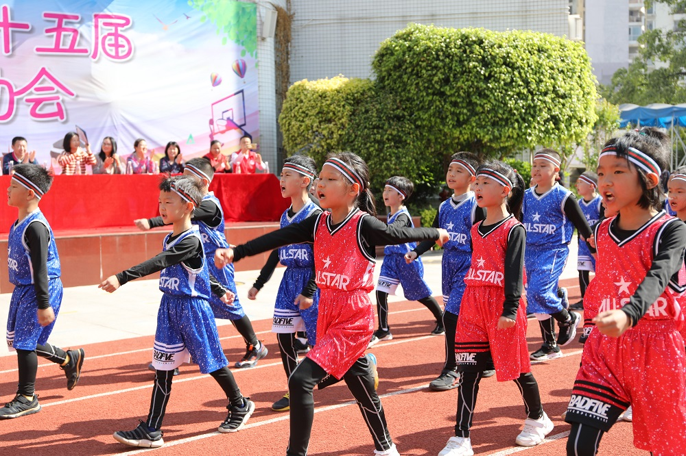
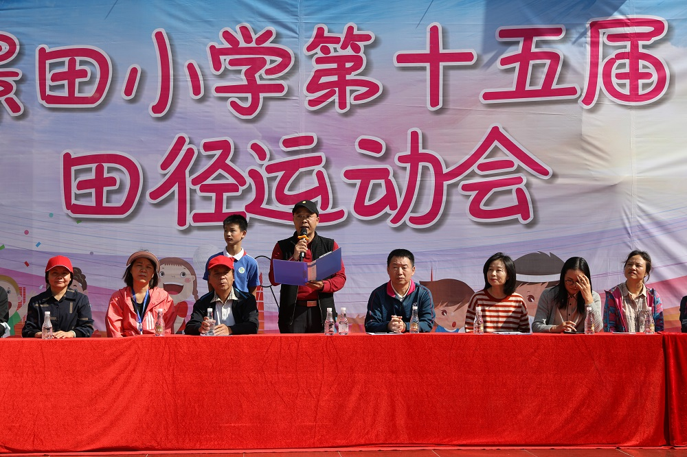
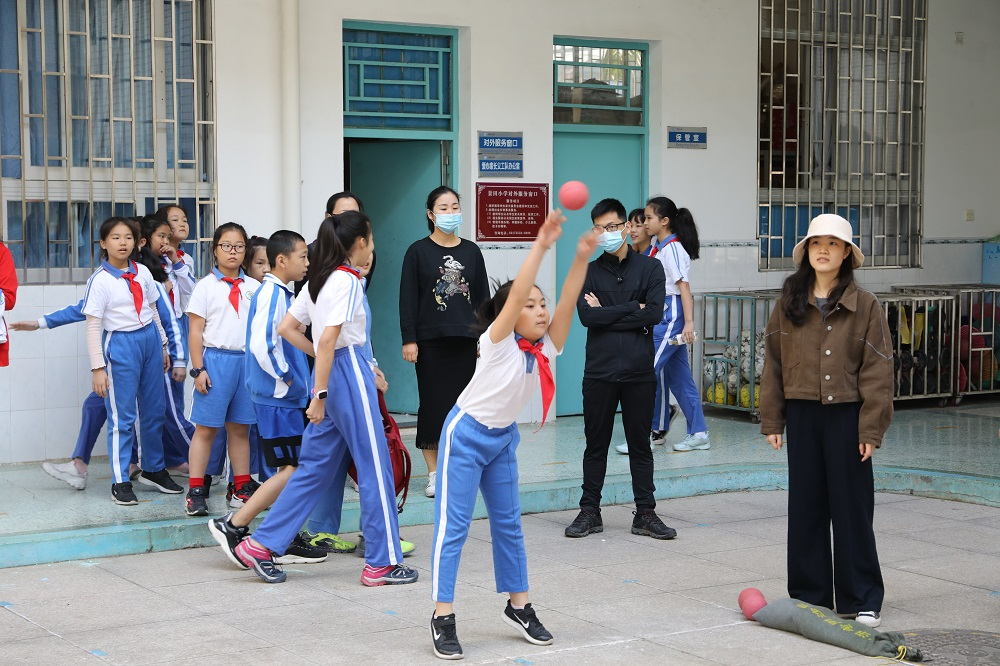

记蒲城县北关小学-蒲城县桥山中学第十五届秋季田径运动会
为深入贯彻落实《关于全面加强和改进新时代学校体育工作的意见》《学校体育工作条例》等文件精神，牢固树立“健康第一”的教育理念，帮助学生在体育锻炼中享受乐趣、增强体质、健全人格、锤炼意志，促进学生全面发展，我校于11月30日至12月1日举行蒲城县北关小学-蒲城县桥山中学第十五届秋季田径运动会。本次运动会以“健康阳光，茁壮成长”为口号，鼓励孩子们体会运动的快乐，享受运动的乐趣。
11月30日上午十点，开幕式在激昂的行进曲中拉开帷幕。各班花式进场，高喊着“一、二、三、四、一二三四”，向大家宣告“运动会，我们准备好了！”

张旅副校长作开幕式致词，运动员及裁判代表宣誓。

“我宣布，蒲城县北关小学-蒲城县桥山中学第十五届秋季运动会开幕！”张也校长宣告开幕，运动会正式开始啦！
本次运动盛会是一次景田学子大展身手的好机会，他们一个个化身为运动健儿，在各个赛场上展示自己英姿。
Day 1
跳大绳
“快点！快点！到后面排队！”
“不要慌、不要乱，找准节奏！”
“进！出！好样的！”
跳大绳是一项班级集体项目，除了个人本身的能力以外，互相配合也非常重要。老师、爸爸妈妈们，我们一起加油！
拔河
“同学们，准备好了！等口令一吹，大家一起往后拉！”
“加油！加油！加油！再坚持一会儿！”
“耶！我们赢了！”
今天除了集体项目还有个人赛呢！看，田径场上奔跑着的是60米初赛的运动健儿们。她们有如飞鹰一般的速度，直直冲往终点。
“哥们，好样的！你是我们的骄傲！”
Day 2
今天的运动项目可真多呀！首先，让我们把镜头转向田径场，看看有什么比赛吧！
（一）接力赛
一二年级的小弟弟、小妹妹们正摩拳擦掌，原来正在进行的是往返接力赛。他们手握着接力棒，化身“风一般的男子/女子”，只为了把手中的接力棒赶紧交到下一位同学手上。
“加油！坚持！继续！终点就在前方！”
最振奋人心的当属三至六年级 6╳150 米接力决赛。一声令下，他们如脱弦的箭，越过对手，直达目标。田径场上沸腾了，到处都是加油声、呐喊声。冲吧，景田学子！
（二）60米短跑决赛
今天参加本项比赛的可个个都是“大咖”呀！他们都是从昨天的初赛中脱颖而出的佼佼者，这让原本激烈的比赛更加引人注目。
“看呀！我们都是小飞人！”
（三）中长跑决赛（图片）
400米、800米决赛同样精彩。它虽然不如短跑那样仅仅抓住大家的心，但是却十分考验运动健儿们的耐力、毅力及体力。他们也吸引了同学们的目光，一波又一波的加油声此起彼伏，为他们助力。
接下来，让我们把目光转向田赛场地。起跳、纵身一跃，犹如腾空而起的飞人，在空中划过一道美丽的弧线，最后稳稳地落在垫子上。大家知道这是什么项目吗？没错，就是跳高！
镜头往小篮球场转一转，此刻正在进行的是跳远决赛。助跑，跳，收尾！
“哇！这也太厉害了吧！”
“这跳远的姿势真帅！”
最后让我们和镜头一起赶往内操场。和田径场上擂鼓滔天的加油声相比，内操场可安静多了。大家都屏气凝神观看比赛，只在球落地的时候才迸发出一阵阵叫好声。原来是投掷实心球决赛。
手握实心球，胸有成竹，每一次的抛起，都带着自己的一分努力和拼搏。一声懊恼，一阵欢呼，都是成长的轨迹。

除了运动健儿们的身姿，场上还有很多吸引人眼球的身影。
啦啦队
各班的啦啦队也铆足了劲儿，花样百出，拼尽全力为场上的运动健儿们加油，欢呼！
家长义工
家长义工们也参与到了本次盛会中。他们有的帮助班级拉跳绳、有的给班级呐喊助威、有的帮忙统计成绩……谢谢您！你们给刚刚入冬成功的景田带来了一丝丝温暖。
挥洒汗水，放飞梦想。欢乐景田，铸就明天。我爱运动，运动使我快乐，我更爱沸腾的景田乐园。我们明年再见！
文/黄少玲
图/唐杨洋、周柳文